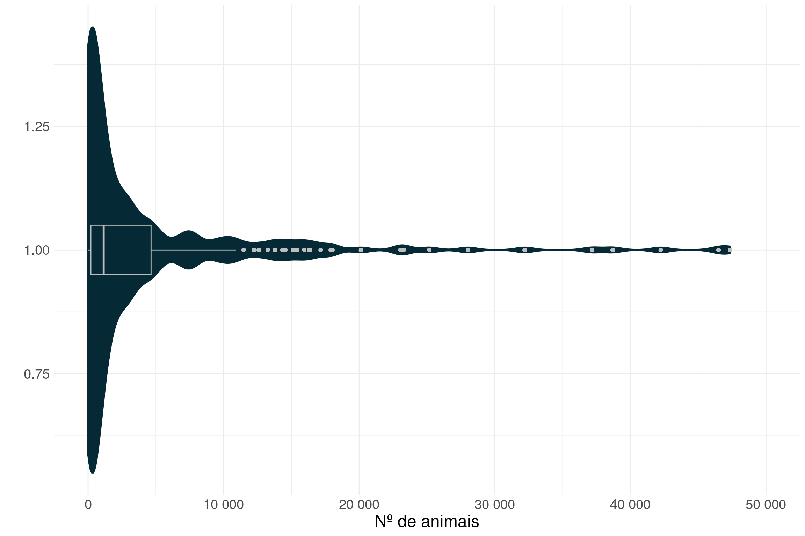

Testes em animais 2016 - USDA
Trabalho de conclusão de Programação Aplicada a Estatística
Resumo
Anualmente o USDA (Departamento de Agricultura dos Estados Unidos) coleta as informações de animais empregados em pesquisas utilizadas em diferentes instâncias de experimentação. Esta prática vai de encontro ao”, em(‘Animal Welfare Act.’),“Este aplicativo foi realizado a partir da análise das observações coletadas pelo USDA no ano de 2016.
1. Introdução
Perguntas iniciais
Abordar na introdução:
- Qual é o posicionamento da população estadunidense com relação ao uso de animais em pesquisa?
- Quais são as legislações a respeito?
- Qual é a discussão do ponto de vista ético?
- Qual é o ponto de vista científico a respeito?
Pontos a serem avaliados a partir destes dados:
- Há diferença com relação as espécies utilizadas em ensaios com exposição a dor?
- Há informações a respeito do motivo pelo qual estes animais são empregados em pesquisa?Qual é a relevancia de cada espécie?
- Qual são as espécies mais utilizadas?
- Há diferença com relação as espécies utilizadas por tipo de ensaio?
- Quais são os Estados que mais usam animais em pesquisa?
2. Material e métodos
3. Resultados
3.1. Composição
Composição geral
Estatística descritiva - Medidas resumo com relação ao total
| Média | Desvio padrão | Mínimo | 1º Quartil | Mediana | 3º Quartil | Máximo |
|---|---|---|---|---|---|---|
| 460.7 | 1769.55 | 0 | 0 | 12 | 177 | 31730 |
Distribuição - total dos animais utilizados

3.2. Utilização de animais pela espécie
| Espécie | Média | Desvio padrão | Mínimo | 1º Quartil | Mediana | 3º Quartil | Máximo |
|---|---|---|---|---|---|---|---|
| Porquinho-da-índia | 1174.59615 | 3943.4793 | 0 | 0.00 | 33.5 | 457.25 | 31730 |
| Outras espécies | 1035.04487 | 2598.4820 | 0 | 3.75 | 131.5 | 862.00 | 17159 |
| Coelhos | 893.53205 | 2146.2947 | 0 | 0.00 | 31.0 | 510.75 | 13699 |
| Hamsters | 657.90385 | 2618.6497 | 0 | 0.00 | 7.5 | 297.50 | 26886 |
| Primatas não humanos | 456.33333 | 1169.5327 | 0 | 0.00 | 11.0 | 194.00 | 8845 |
| Cães | 390.89103 | 790.9782 | 0 | 0.00 | 46.5 | 410.50 | 4456 |
| Porcos | 321.96154 | 757.8923 | 0 | 0.00 | 13.0 | 237.00 | 5932 |
| Animais de fazenda | 132.03205 | 503.0254 | 0 | 0.00 | 5.0 | 101.75 | 5237 |
| Gatos | 121.14103 | 252.9114 | 0 | 0.00 | 10.5 | 143.50 | 1888 |
| Ovelhas | 78.17949 | 217.2989 | 0 | 0.00 | 0.0 | 62.50 | 1974 |
| Espécie | Média | Desvio padrão | Mínimo | 1º Quartil | Mediana | 3º Quartil | Máximo |
|---|---|---|---|---|---|---|---|
| Outras espécies | 795.63462 | 1668.42524 | 0 | 4.5 | 112.5 | 744.25 | 9287 |
| Primatas não humanos | 742.94231 | 1735.30353 | 0 | 0.0 | 12.0 | 365.25 | 9741 |
| Porquinho-da-índia | 383.15385 | 1835.01996 | 0 | 0.0 | 1.0 | 70.00 | 13102 |
| Coelhos | 320.75000 | 916.08283 | 0 | 0.0 | 7.5 | 43.75 | 4498 |
| Porcos | 112.17308 | 381.94829 | 0 | 0.0 | 0.0 | 32.00 | 2444 |
| Cães | 111.23077 | 503.19698 | 0 | 0.0 | 2.0 | 71.00 | 3635 |
| Hamsters | 80.67308 | 195.25566 | 0 | 0.0 | 0.0 | 66.25 | 1067 |
| Animais de fazenda | 50.36538 | 151.72938 | 0 | 0.0 | 0.0 | 27.00 | 850 |
| Gatos | 24.90385 | 46.17879 | 0 | 0.0 | 2.0 | 26.25 | 208 |
| Ovelhas | 21.32692 | 50.29276 | 0 | 0.0 | 0.5 | 17.50 | 296 |

List of 1
$ text:List of 11
..$ family : NULL
..$ face : chr "bold"
..$ colour : NULL
..$ size : num 18
..$ hjust : NULL
..$ vjust : NULL
..$ angle : NULL
..$ lineheight : NULL
..$ margin : NULL
..$ debug : NULL
..$ inherit.blank: logi FALSE
..- attr(*, "class")= chr [1:2] "element_text" "element"
- attr(*, "class")= chr [1:2] "theme" "gg"
- attr(*, "complete")= logi FALSE
- attr(*, "validate")= logi TRUE
3.3. Exposição a dor

3.4. Utilização de animais por Estado